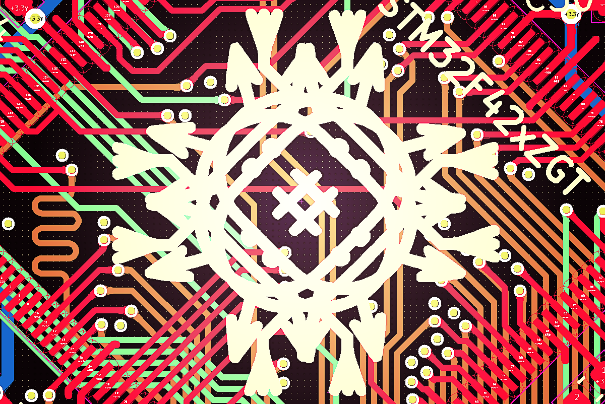

5. Resources
This page aims to collect all in-depth documentation and design resources on the Ksoloti Core.
The Ksoloti Core pin header layout has not changed since board revision v0.4. Only minor additions have been made.

"My God! Just what sort of mutant creature are we dealing with here?"
"My God! Just what sort of mutant creature are we dealing with here?"
Combined PCB mockup and schematic imported to Altium365 Web Viewer
(Might help you with the pinout and dimensions if you plan to build your own shield. Note that this has been auto-converted from Kicad so the fonts and labels are a bit out of shape.)
(Might help you with the pinout and dimensions if you plan to build your own shield. Note that this has been auto-converted from Kicad so the fonts and labels are a bit out of shape.)